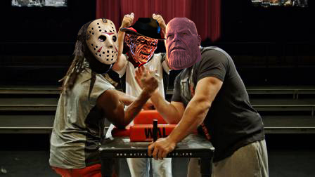

Freddy vs Jason: the different endings
Time travel and killing Satan

Yeah you're reading that right.
So in this script, written by one Peter Briggs (who went on to write the 2004 Hellboy film), Freddy
and Jason are both sent to hell, as usual. However this time, they come across Satan. And just... decide
to kill him. Again as usual, I suppose.
Also they were going to be erased from time due to an FBI agent traveling back in time to make sure
neither one ever existed. So that's fun.
That's not the strangest part of this script, however. The strangest part is when they get to hell,
Satan is not actually named Satan. In the script he is called "Thanos". Yes, spelled (and presumebly
pronounced) the same as THAT Thanos